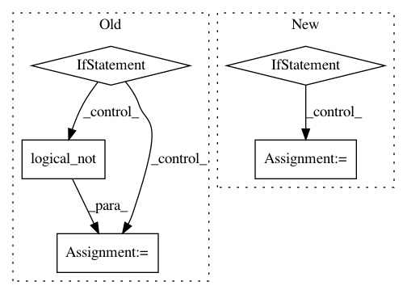

86b395f4185bc98a7db614df368cd44e6a6866c6,skimage/morphology/misc.py,,remove_small_holes,#Any#Any#Any#Any#,152
Before Change
// removing small objects from the inverse of ar
out = remove_small_objects(out, area_threshold, connectivity, out=out)
if in_place:
np.logical_not(out, out=out)
else:
out = np.logical_not(out)
return out
After Change
if in_place:
out = ar
elif out is None:
out = ar.astype(bool, copy=True)
// Creating the inverse of ar
np.logical_not(ar, out=out)
In pattern: SUPERPATTERN
Frequency: 3
Non-data size: 5
Instances
Project Name: scikit-image/scikit-image
Commit Name: 86b395f4185bc98a7db614df368cd44e6a6866c6
Time: 2021-02-10
Author: rfezzani@gmail.com
File Name: skimage/morphology/misc.py
Class Name:
Method Name: remove_small_holes
Project Name: sebp/scikit-survival
Commit Name: 0bed328fc01823df9a99af2b96441398fd35c938
Time: 2019-04-15
Author: sebp@k-d-w.org
File Name: sksurv/metrics.py
Class Name:
Method Name: _get_comparable
Project Name: biolab/orange3
Commit Name: ac892eddd865681c9746efeda9f1f094f26cc32f
Time: 2012-11-29
Author: janez.demsar@fri.uni-lj.si
File Name: Orange/data/filter.py
Class Name: Filter_IsDefined
Method Name: __call__